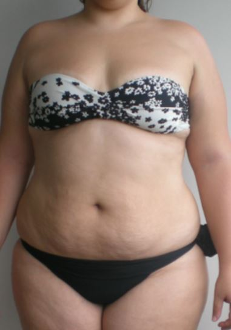

"Pai, eu vou ficar gorda igual a mamãe?
Após ouvir essas duras palavras saindo da boca da nossa filha Sofia de 11 anos… Minha esposa desabou no sofá com lágrimas escorrendo pelo seu rosto. Tínhamos tentado de tudo… Exercícios em jejum, corridas, academia… Dietas que só tinham aveia, frango e salada… Cortamos carboidratos depois das 18h… Eliminamos o açúcar e a gordura… E tomamos água com limão após acordar. Nada adiantou. O peso na balança nunca diminuía.
Ela ficou com o coração partido…
Sua vida era governada por uma barriga mole e saliente. O pior de tudo foi quando ela olhou pra mim e disse:
“Eu gostaria de desaparecer…”
Isso me deixou completamente impotente. Minha esposa sofreu todos esses anos… e pelo quê? Por nada? Esse foi o momento mais doloroso do nosso casamento. Mas sou grato por isso, porque esse momento humilhante das nossas vidas. Nos levou a conhecer o Dr. John… Que nos revelou um “ritual matinal de 3 minutos”... Mantido em segredo por uma tribo do Vietnã (um grupo de pessoas que não faz ideia o que significa obesidade). Esse segredo é tão poderoso que em poucas semanas, fez Jéssica Rodrigues, uma paulista de 44 anos, mãe de duas lindas meninas... Dissolver do “nada” 23kg de gordura, do seu bumbum, dos seus quadris, do braços… e do rosto!
Ela saiu disso:
Pra isso:
Sua família e seus amigos ficaram admirados com o seu corpo tonificado e as pernas sem celulites…
E imploravam para saber qual era o seu segredo.
E não apenas a Jéssica… Seu marido Marcelo também usava esse segredinho todas as manhãs… E colocou um fim na barriga de chope… E pela primeira vez na sua vida… Começaram a aparecer os primeiros gominhos no seu abdômen! E o mais incrível era que a Jéssica e o Marcelo não pararam de comer suas comidas favoritas todos os dias… Na verdade, com esse segredinho…
Eles comiam até mais!
E se você está cética com tudo isso…Eu te entendo!
Sei bem o que é acreditar em promessas falsas. Mas por mais incrível que isso possa parecer… Tudo isso é possível graças a esse ritual matinal de 3 minutos…
Que é bizarramente simples, natural e seguro…
E que você pode fazer em casa, nesse exato momento. E antes que você pense… Não tem nada a ver com exercícios físicos… Contar calorias… Ou qualquer tipo de dieta “da moda” que muitos profissionais tentam te vender hoje em dia. Mas acredite…
O que eu vou te revelar vai contra tudo que você ACHAVA que sabia sobre a perda de peso…
Bom, “eles” querem que você acredite que a culpa por ser gordo é sua… Mas a verdade é uma só: a culpa literalmente não é sua! E como eu sei de tudo isso? Porque eu sou o Marcelo Rodrigues, marido da Jéssica.
E eu preciso te falar sobre o Dr. Jhon
Ele passou quase 8 anos da sua vida trabalhando para corporações gigantes… E pela primeira vez na vida, ele quebrou o “código do silêncio”... Revelou pra todo mundo a causa real e misteriosa de um metabolismo lento… E do acúmulo de gordura na barriga. Ele também revelou a identidade secreta do que os cientistas estão chamando de...
Tecido Anti Gordura
E que pesquisas de grandes universidades do mundo todo como Universidade Harvard, e Universidade de Buckingham em Londres… Constataram que esse tecido diminui à medida que você envelhece… Especialmente depois dos seus 35 anos… Nas palavras do Dr. John…
“Sem esse Tecido Anti Gordura, é impossível perder peso e queimar gordura…”
Seja com dieta, ou exercício físico. Mas não perca as esperanças… Porque ele garante que a solução pra isso é simples e fácil… E posso garantir que você nunca viu ou tentou antes. Você vai aprender como reverter esse quadro em poucos segundos. Porque esse segredinho que estou prestes a revelar para você… Ativa e multiplica em 700% a produção do tecido anti gordura… E quando você ativa… derreter as gordurinhas mais profundas do seu corpo (aquelas que pareciam inatingíveis), se torna inevitável. Esse segredinho já transformou a vida de muitas pessoas pelo Brasil…
Como a Maria… que disse:
Já perdi quatro números de vestido e perdi pouco mais de 20kgs, é ótimo olhar no espelho agora quando vejo meu reflexo. Eu adoro isso.
E o Juan… que disse:
Pela primeira vez na minha vida pensei para mim mesmo que consigo perder peso. Perdi 17kgs e com isso perdi todos os meus sentimentos de ansiedade e constrangimento... minha vida está totalmente transformada. E assim como funcionou para eles... Como você se sentirá quando isso funcionar para você? E segundo o Dr. John… Como esse ritual ataca diretamente a causa raiz do ganho de peso…
Uma vez que a gordura se foi... se foi para sempre!
Portanto, você nunca mais sofrerá com o efeito sanfona. Você nunca ouviu falar sobre essa solução antes… Porque a indústria (gananciosa) e corrupta da perda de peso… que faturam mais de 78 bilhões de dólares por ano, está fazendo de tudo que está ao seu alcance para esconder isso de você… Inclusive já descobri que eles estão tentando remover esse vídeo da internet… Porque todo o “negócio” deles depende de você ficar cada vez mais gordo e doente… E ser cliente dessas companhias a vida toda. Portanto, preste muita atenção… Porque nessa apresentação “proibida”... Você ficará chocada quando descobrir a identidade secreta do tecido anti gordura…
E a causa raiz de toda a gordura do seu corpo.
Isso não tem nada a ver com sua genética… Com hormônios… Com as bactérias do seu intestino… Com a qualidade do sono… Ou qualquer outra razão que “eles querem que você acredite”. E também é por essa razão que algumas pessoas são magras desde que nasceram… Podem comer o que quiserem… E ainda ficam perfeitas em roupas de banho, com um biquíni ou uma sunga… Mas outras, assim como eu e você… Que come igual um passarinho, treinam o dia todo… Sofrem para perder um quilinho. Você também vai aprender o exato passo a passo para que você também consiga ativar esse "tecido anti gordura”... Fazendo com que as células que queimam calorias fiquem trabalhando no seu corpo durante o dia todo… Sem precisar sair de casa. Além disso, vou compartilhar todos os estudos das melhores universidades que comprovam tudo o que estou dizendo sobre como e por que isso funciona... Tudo isso, mais algumas surpresas escondidas no caminho dentro deste vídeo que mal posso esperar para vocês verem... Como já falei antes… Meu nome é Marcelo Rodrigues… Não sou um professor, nutricionista ou influencer fitness… Sou apenas uma pessoa normal, assim como você. Sou um delegado de polícia de 43 anos de idade… E vivo com minha esposa Jéssica e minhas duas lindas filhas, em Bogotá, na Colômbia. E acredite, eu sei como é perder o controle de uma situação que parece fácil. O que parece ser só uma gordurinha de nada, num piscar de olhos viram 25kg a mais na balança. E foi isso que aconteceu comigo e com a Jéssica. Nos conhecemos há 20 anos… Éramos apaixonados e o mundo era perfeito. O tempo se passou e, aos 26 anos, a Jéssica deu à luz a nossa primeira filha, a Sofia. Ela ganhou uns 10kg na gravidez, mas continuou fazendo o que sempre fazia… Corridas leves, aulas de zumba… e tudo voltou ao normal. Mas 7 anos depois nasceu a nossa segunda filha, Isabel… E dessa vez, após comer por duas pessoas durante nove meses… Ela engordou incríveis 27kg… Nosso médico disse que o teor de açúcar no sangue e a gordura ao redor da cintura e da barriga estava começando a colocar muita pressão no seu coração… E ela tinha que perder esses 27kg urgentemente. Mas agora, aos 33 anos, tudo que funcionava antes, não funcionava mais. O peso que ela ganhou na gravidez não sumia… E nos 5 anos seguintes ela tentou de tudo para perder peso. Contar calorias… Dieta cetogênica… Jejum intermitente… Compramos até uma bicicleta de academia (que só piorou suas dores nos joelhos…) E cada vez que ela tentava uma dieta nova, até perdia 1 ou 2kgs… Mas pela privação… Ela tinha uma recaída nas primeiras semanas…
E ela sentia na pele o efeito rebote.
Nesse momento, a pele com aspecto de casca de laranja das celulites começaram a aparecer… E dia após dia ela se afastava da mulher que eu conheci. Chegamos ao ponto de pensar que iríamos nos separar. Nossa vida sexual desapareceu… E eu tinha vergonha de admitir isso, mas era impossível ter intimidade.
Foi assim durante 9 anos…
E ao invés de perder peso, agora ela engordou mais 29kgs. Nunca mais se vestiu na minha frente… Parou de se olhar no espelho… E trancava a porta do banheiro quando ia tomar banho. Ela sempre pensava nas outras mulheres, magrinhas e em forma, que podiam comer tudo o que queriam. Eu me senti envergonhado. Com raiva da indústria corrupta do emagrecimento… Que por mais de 10 anos, secou nossas contas bancárias. E tudo o que compramos foram mais problemas. Fiquei com muito medo de perdê-la. Não podia imaginar minhas filhas terem pais separados. Mas em um belo domingo de manhã… Eu acordava antes de todo mundo sempre… Comecei a ver as notícias do dia, e me deparei com algo que me chamou a atenção. Essa notícia falava sobre um Dr… Um médico de sessenta e dois anos que afirma que a obesidade já foi curada e que cita:
“A indústria do emagrecimento está escondendo isso de você”.
Onde o Dr. John trabalhou por mais de oito anos como pesquisador e conselheiro, antes de tentar divulgar a verdade... O Dr John já gastou uma pequena fortuna lutando com eles pelo direito de revelar o que ele chamou de...
“O maior segredo de emagrecimento dos últimos 100 anos”.
Depois de ver isso, eu sabia que tinha que falar com ele… Todos os dias eu ligava para sua secretária tentando marcar uma reunião… Até que um dia ele acabou concordando. Me contou sobre sua vida como médico e também sobre sua experiência fora do Brasil, numa ilha tropical na costa do Vietnã chamada de Cat Ba… Antes de começar a trabalhar em grandes corporações da indústria do emagrecimento nos Estados Unidos… E bom… Você sabia que Cat Ba é um dos ecossistemas mais biodiversos e únicos do mundo? E por incrível que pareça… Muitos remédios que existem hoje em dia, para pressão alta, queda de cabelo, visão e muitas outras… Vem das mais de 800 plantas medicinais que são exclusivas dessa ilha. E enquanto ele me contava sobre essa ilha... Contei tudo sobre a luta da minha esposa por mais de 16 anos contra o sobrepeso… E como isso afetou nossa relação e a vida dos nossos filhos também… Mas como a saúde da Jéssica estava indo de mal a pior… Eu não tinha muito tempo a perder… E implorei para o Dr John me revelar esse grande segredo de emagrecimento… E fui ainda mais além… Perguntei se havia algo que pudéssemos fazer para reverter a situação da minha esposa, visto que tudo que ela tinha tentado durante décadas tinha falhado…
E bom, o que o Dr. me falou nos próximos minutos explodiu minha mente...
“Primeiro, entenda que nada disso é culpa da Jéssica”, ele disse… Sempre que você percebe que está engordando, as pessoas te dizem pra começar uma dieta, comer frango e salada, correr uma maratona na esteira, cortar carboidratos, contar calorias… e tudo mais… Isso soa familiar? Mas a questão é que: a partir do momento em que você decide fazer uma dessas coisas você está fazendo o efeito contrário…
Você está destinado a engordar mais.
É assim que a indústria de emagrecimento faz milhões de dólares todos os anos… Foi assim que eles projetaram esse “modelo de negócio”... Afinal, quando foi a última vez que você fez dieta e o peso nunca mais voltou? Após iniciar uma dieta, suas gordurinhas podem diminuir um pouco… Mas logo depois seu corpo começa a entrar em um estado que você sente uma fome descomunal… Isso desacelera seu metabolismo, e o corpo se protege retendo gordura. Um estudo pouco conhecido de 2020 publicado na revista médica britânica testou 22.000 pessoas acima do peso, fazendo dietas populares como cetogênica, contagem de calorias, jejum intermitente e low carb… E depois de 6 meses, descobriram que quase todos os vinte e dois mil participantes tinham sofrido um efeito rebote e fracassaram na dieta… E 66% ficaram mais gordos do que quando começaram. Lembre-se que quando sua dieta falha e você sente vergonha e falta de vontade depois de comer alimentos fora de sua dieta, a culpa não é sua... Pesquisas da Universidade de Berkeley na Califórnia descobriram que fazer dieta uma única vez pode desacelerar o metabolismo, deixar seus cabelos ralinhos, dar picos de fome e aumenta o risco de doenças cardíacas e osteoporose. E os danos do metabolismo podem ser permanentes.
A verdade? As pessoas magras não fazem dieta.
O motivo? Elas possuem esse “Tecido Anti Gordura” em maior quantidade do que as pessoas acima do peso. Dr. John me revelou também qual é o nome desse tecido… e porque ele é a chave para emagrecer de forma saudável e permanente. Veja, há dois tipos de gordura... Gordura branca e gordura marrom. Foi ensinado que somente bebês tinham essa gordura marrom especial... O que corresponde a mais ou menos 5% do seu peso corporal… Os bebês não conseguem tremer, então quando estão com frio… Essa gordura marrom é ativada para mantê-los aquecidos. Os pesquisadores supõem que toda a gordura marrom desaparece durante a infância. Mas em 2009, os cientistas da Finlândia fizeram uma pequena descoberta... Os adultos também têm certas quantidades minúsculas de gordura marrom...
Mas o que o aumento da gordura marrom tem a ver com a perda de peso?
Essa é a parte incrível… Um estudo de 2021, publicado na Nature Medicine que testou 52.000 mulheres e homens de 30 a 80 anos...
Descobriu que todas as pessoas acima do peso tinham baixos níveis de gordura marrom… E as pessoas magras, tinham níveis altos de gordura marrom.
E todos aqueles com mais gordura marrom tinham um excelente nível de açúcar no sangue, pressão arterial e colesterol. E ainda mais altos níveis de dopamina, o hormônio da felicidade. Mas não se engane… Essa gordura não é realmente uma gordura… Sua cor marrom vem das mitocôndrias… Que são céulas que trabalham 24 horas por dia, e 7 dias por semana… Queimando calorias de suas reservas de gordura e transformando os alimentos que você come em pura energia. E mesmo que as células de gordura marrom sejam minúsculas, elas podem queimar até trezentas vezes mais calorias do que qualquer outra célula do seu corpo…
Imagine fazer seu corpo pensar que você está correndo uma maratona, mas na verdade você está deitado no sofá assistindo TV…
É isso que a gordura marrom é capaz de fazer. E você continua queimando calorias como uma fornalha dia após dia, sem efeitos colaterais.
Esse é o “tecido anti gordura” que o Dr John estava falando…
E é por isso que os moradores da Ilha de Cat Ba não ficam acima do peso…
Já que eles possuem em média 5x mais gordura marrom do que o resto do mundo.
Mas a boa notícia é… O Dr John disse que é simples e fácil reverter a situação, e fazer seu corpo produzir gordura marrom em maior quantidade. Ele diz que beber uma vitamina caseira de 6 ingredientes logo após acordar (durante 21 dias), e fazer seu corpo começar a produzir novamente essa gordura marrom… Que transforma gordura branca em energia, e derrete a barriga molenga. Logo depois que descobri essa receita… Logo fui fazer o teste na pessoa que mais importava pra mim, minha esposa Jéssica… No começo ela se manteve cética… Principalmente porque achou que o gosto seria horrível… Mas depois que descobriu que o gosto era doce e nem parecia como a maioria dos produtos de emagrecimento… Ela começou a tomar. E fiquei espantado na velocidade em que a vida dela se transformou… Perdendo gordura da noite pro dia… E dia após dia, ela foi ficando cada vez mais magrinha… Sua cinturinha foi afinando… As calças apertadas já não paravam mais nas suas pernas… Sua autoestima tinha voltado… Começamos a ter momentos íntimos que não tínhamos há anos… E nosso casamento finalmente tinha sido salvo. Finalmente eu tinha conseguido salvar minha esposa do buraco… E poderia viver tranquilo, sabendo que minhas filhas não teriam que viver sem a mãe, ou com pais separados. Bom… depois que eu vi como o segredo do Dr John tinha funcionado pra minha esposa Jéssica… Pensei nos outros milhões de homens e mulheres que estão tentando emagrecer, mas que infelizmente não fazem ideia de como fazer isso…
Entrei em contato com o Dr John, e fiz uma proposta muito ousada… Primeiro, disse a ele que queria levar esse segredo para o máximo de pessoas possível, porque eu sei o que as pessoas que estão acima do peso estão passando… Sei como é não querer levantar da cama pela manhã… Como é não querer se olhar no espelho… Ou ficar 24 horas preocupado com um ataque no coração… E depois de muita conversa… Decidimos criar, juntos, um programa para ajudar pessoas acima do peso, a terem a chance real de ver seus corpos em forma de novo…
Entrei em contato com o Dr John, e fiz uma proposta muito ousada… Primeiro, disse a ele que queria levar esse segredo para o máximo de pessoas possível, porque eu sei o que as pessoas que estão acima do peso estão passando… Sei como é não querer levantar da cama pela manhã… Como é não querer se olhar no espelho… Ou ficar 24 horas preocupado com um ataque no coração… E depois de muita conversa… Decidimos criar, juntos, um programa para ajudar pessoas acima do peso, a terem a chance real de ver seus corpos em forma de novo…
O Protocolo Zero Barriga é o resultado de mais de um ano de pesquisa, testes e trabalho meu, e do Dr. John, um dos maiores especialistas em emagrecimento do mundo… Mas mais que isso: é um resultado da mais pura VERDADE por trás do processo de emagrecimento que a bilionária indústria quer esconder de você... Quando eu e o Dr John decidimos compartilhar esse método surpreendente de perder peso, queimar gordura 24 horas por dia e ficar em forma em tempo recorde… No Protocolo Zero Barriga você descobrirá um simples segredo para perder peso permanentemente… Sem precisar de qualquer exercício… ou mudar algo da sua rotina. Quando você se inscrever no programa… Você terá acesso imediato à receita secreta da Vitamina Anti Gordura do Dr. John… E também aos outros super ingredientes especiais que compõem essa receita. Acesse a relação EXATA de especiarias, chás e outros ingredientes que aceleram brutalmente o seu metabolismo. E transforme seu corpo em uma máquina destruidora de gordura branca. Comece a produzir o tecido adiposo marrom… E queime gordura 24 horas por dia… sem se preocupar O QUE você e QUANDO você come. E, sabe de uma coisa? Sinceramente, apenas e receita dessa “Vitamina Anti Gordura” já seria o suficiente para transformar seu corpo… e sua vida. Porque… se você não pode apenas fazer uma vitamina que não leva mais do que 10 minutos pela manhã, eu acredito que NINGUÉM pode te ajudar a perder peso. Mas não é só isso…
Dentro do Protocolo Zero Barriga, você também vai aprender…
Como aumentar naturalmente os níveis do tecido adiposo marrom em 1300%, assim seu corpo se torna uma fogueira de queimar gordura o dia todo… derretendo toda gordurinha localizada enquanto você assiste televisão, e sem mesmo ter que colocar os pés na academia…
O segredo para transformar gordura branca em energia, e que força seu corpo e suas células a engolir sua gordura branca como se fosse um pudim… sobrando só gordura marrom para queimar gordura.
A técnica ”tireoide acelerada" que qualquer criança consegue fazer para regular seus hormônios, catapultando seus resultados na perda de peso…
Como rebobinar o relógio da sua pele, para que você tenha a lisa como um pêssego. A indústria dos cosméticos não quer que você saiba disso.
Você fica irritado o tempo todo? Aprenda um simples truque de dieta que reduz a “depressão química” no seu cérebro instantaneamente… fazendo seu humor chegar nas alturas em no máximo 3 dias.
Você é diabético ou pré-diabético? Faça esse “ritual do açúcar” por dois minutos antes do café, e reduza seus níveis de glicose em até 40%... garantido!
Como ligar o “botão da saciedade”... para que os desejos de sair da dieta sejam eliminados… (isso se você quiser fazer uma)
Empolgada? Isso é apenas o começo. Porque você também vai descobrir…
E, além disso, hoje… Como um agradecimento antecipado por assistir até agora… O Dr. John entregará 2 presentes gratuitos… que já são seus. O primeiro presente se chama…
"Guia Detox Instantâneo"
Você sabia que desintoxicar, e limpar seus órgãos internos ajuda na absorção de nutrientes? Por isso, o Dr. John separou 20 receitas bizarramente fáceis, de no máximo 15 segundos (e com ingredientes que não passam de 5 dólares)... Alguns deles eu aposto que você já tem na sua cozinha! Além disso, descubra:
Normalmente, esse guia é vendido por R$ 99,00… Mas hoje ele é seu DE GRAÇA!
"Como Desbloquear Sua Melhor Versão"
Um novo corpo… exige uma nova mentalidade! Neste livro digital, o Dr. John revelará:
Normalmente, esse guia é vendido por R$ 67,00… Mas hoje ele é seu DE GRAÇA!
Mal posso esperar para você ler. Esses dois bônus já são seus. Você não precisará pagar nada por eles.
E agora que você sabe de tudo isso… Preciso te fazer uma pergunta muito importante. O quanto vale pra você nunca mais ter que se sentir gorda ou gordo de novo pelo resto da sua vida?
O quanto vale pra você ter amigos que vão ficar com inveja das incríveis mudanças que você fez com o seu corpo? O quanto vale pra você NUNCA mais ter que se privar das comidas que você mais ama, como pizzas, hambúrgueres, sushi…
Ou sequer ter que fazer dieta de novo?…
E aí me diga… Qual valor você acha que seria justo para ter um corpo sexy, jovem e invejável novamente? Poder comer o que quiser sem precisar gastar horas dentro de uma academia, ou gastar com nutricionistas e procedimentos estéticos caros? E o melhor de tudo…
Ter controle absoluto sobre o seu peso em poucas semanas, tendo apenas que fazer o esforço de ir até o mercadinho da esquina? Se você for completamente honesta consigo mesma, eu aposto que você iria falar que algo em torno de R$ 1.000 ou mais seria completamente justo…
Para se sentir feliz… E dar um sorriso de orelha a orelha toda vez que você se olhar no espelho… ou tentar apertar os pneus da barriga e ver que eles não existem mais.
Mas é claro que no momento que estamos vivendo, sei que R$ 1.000 é muito dinheiro. Até poucos meses atrás, essa receita era um segredo que a indústria do emagrecimento queria esconder de você.
Mas o Dr. John acredita ser uma vergonha deixar milhares de pessoas do mundo inteiro sofrendo com sobrepeso, sem ter acesso a esse segredo. Então, ele decidiu fazer algo a respeito.
Por mais que já concordamos que o Protocolo Zero Barriga vale pelo menos R$ 1.000...
Já que você chegou até aqui e dividiu seu precioso tempo comigo… O Dr. John está fazendo uma condição especial. Portanto, você não precisa pagar os R$ 1.000...
Nem mesmo vou pedir que você desembolse R$ 497… ou até mesmo R$ 197... (embora isso possa parecer de graça)...
Enquanto essa página estiver no ar, você pagará apenas um valor simbólico!
É isso mesmo! Você poderá fazer parte do Programa Protocolo Zero Barriga por um valor inacreditável!
Clique no botão abaixo:
Agora eu quero que você pare por uma segundo e reflita sobre isso. É menos do que 18 centavos por dia…
Para finalmente se tornar a sua melhor versão. Agora eu te pergunto… Qual é o valor da sua felicidade? Quanto vale pra você poder usar um biquíni na praia ou na piscina e não sentir vergonha do seu corpo… Quando vale pra você poder se sentir jovem e cheia de energia novamente? Eu sinceramente não conseguiria colocar um valor nisso tudo. Mas hoje você pode ter isso, por esse preço ridículo… Então…
Clique no botão que aparece abaixo desse vídeo agora mesmo, e garanta o seu desconto e mais os bônus gratuitos!